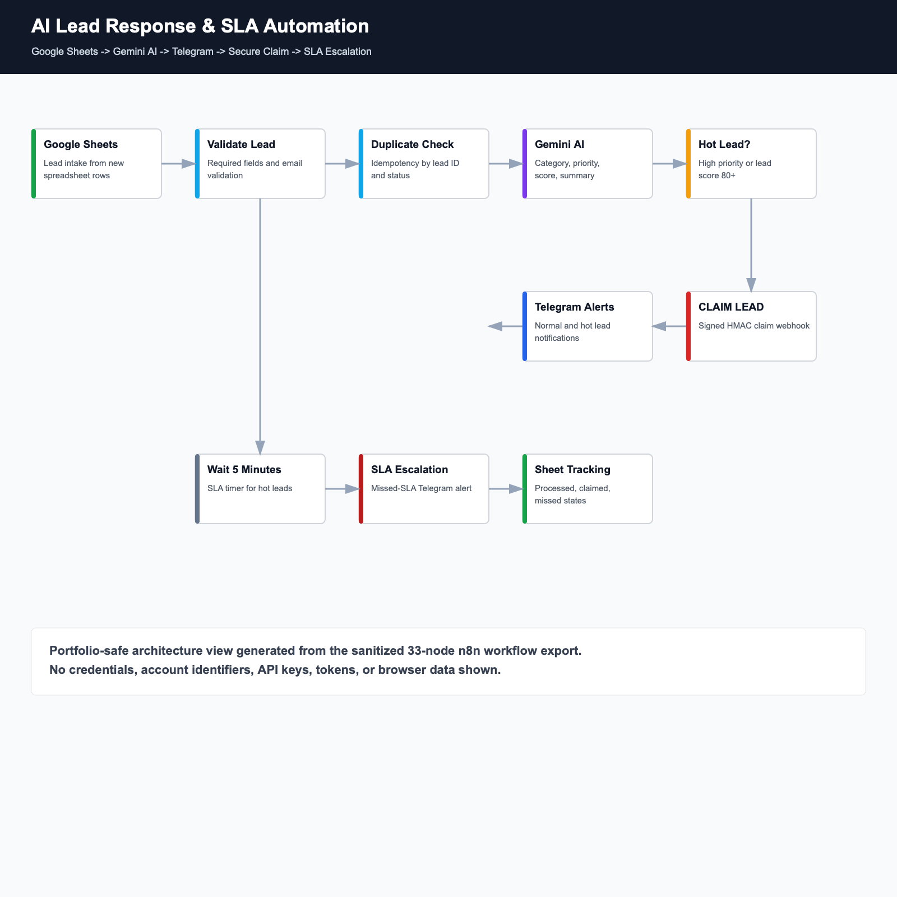

AI Lead Response & SLA Automation
Problem: Spreadsheet leads can wait unnoticed, lack ownership, and create duplicate notifications.
Solution: A Google Sheets-triggered workflow validates and qualifies leads, routes hot opportunities to Telegram, supports signed claim actions, and escalates missed response windows.
- Gemini category, priority, score and next action
- Hot-lead routing and concise Telegram alerts
- Signed CLAIM LEAD webhook with duplicate protection
- Five-minute SLA monitoring and missed-SLA escalation
- Google Sheets processing and claim-state tracking
Architecture Sheets trigger → validation → Gemini → Telegram → claim/SLA state machine
n8nGeminiGoogle SheetsTelegramHMAC